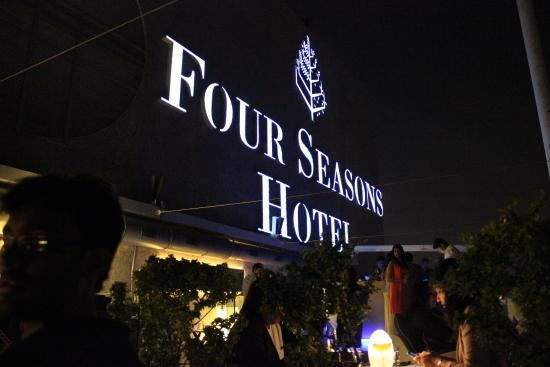
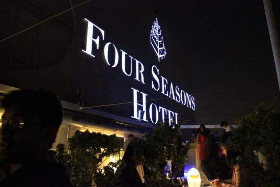

THE ISLAND OF DREAMS...!
Ride The Gateway Ferry: The water's brackish and there's roughly one life-belt for every 20 passengers.
But don't let that stop you from taking a joyride on one of the ferries at Apollo Bunder.
The 20-minute ride around the harbour is perfectly safe, so long as you don't lean too far out of the boat.
Gateway of India, Apollo Bunder. Ferries leave roughly every 15 minutes.
Jetski At Chowpatty: The H2O water sports centre offers scuba diving, snorkelling, water and jetskiing, among other facilities.
If you are above 18, you can charter a jet ski after attending a familiarisation programme,which is offered free to all participants.
Once you're used to the mean machines, you may be able to ride them alone but a lifeguard is likely to hover close by.
Catch A Glimpse Of Flamingoes At Sewri : The pollution in Mumbai is at par with most major metros of the world.
Hence, it is a bit of a surprise to see a breathtaking glimpse of the magic of nature!
Sewri mudflats are home to the migratory lesser pink flamingoes from October till March every year!
These pink beauties descend in thousands and cover the brown marshiness with an ocean of pink!
The best time to visit this is early mornings, between high and low tides.
Hang Out At Hanging Garden: Until ten years ago, standing at the highest point of Pherozeshah Mehta Garden opposite Kamala Nehru Park meant you could see all the way to the refineries at Wadala and count each jewel on the Queen’s Necklace on Marine Drive.
While new high-rises have started to obscure two of those views,the garden is still the best seat in the house for panoramic views of the city.
Walk Along Marine Drive: It's Mumbai's answer to Havana's Malecon.
Even after its freshly installed parapets, redesigned jaywalk-deterrent road divider and missing bhuttewalas,the walk still has goose bump-inducing views of the Mumbai skyline and the Arabian Sea.
The stretch of boulevard running from the NCPA at Nariman point till the beach at Girgaum is called the Marine Drive.
This stretch is about 4 kms long and looks extremely beautiful after dusk.
The semi-circular stretch adorned with streetlights looks like THE QUEEN'S NECKLACE.
Another time to go to the Queen's Necklace is the monsoons if you are very adventurous.
Waves of water break into surf and just jump out across the boulevard over to the road along Marine Drive.

Also you can visit:
Worli Sea Face
Bandra- Bandstand, Carter's Road
Juhu Chowpatty
Powai Lake, Powai Garden